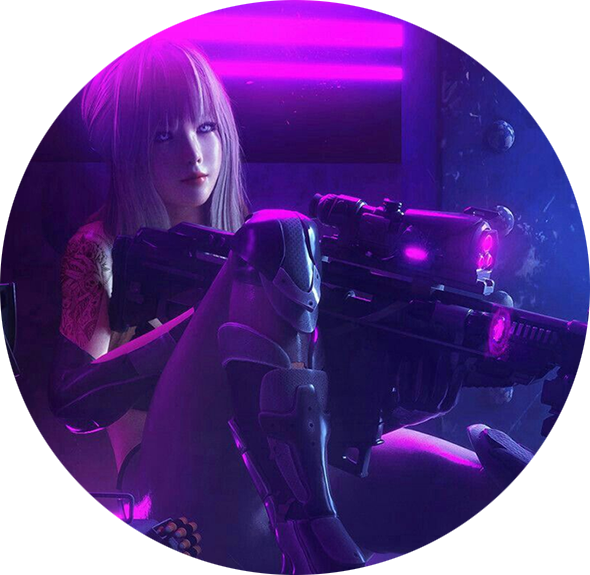

マリア
Mi nombre es María (マリア en japonés), aunque durante mucho tiempo me conocieron como azu en internet. Soy una apasionada de la cultura geek desde muy pequeña, particulamente los videojuegos y el animé. Además de eso, disfruto leyendo literatura de ciencia ficción y filosofía.Me agrada mucho el género cyberpunk y su respectiva estética. Cree este sitio web para estar en contacto con gente que comparta mis mismos intereses y hablar libremente de videojuegos.
Juegos favoritos
- -Final Fantasy 7
- -Silent Hill 2
- -Okami
- -Bloodborne